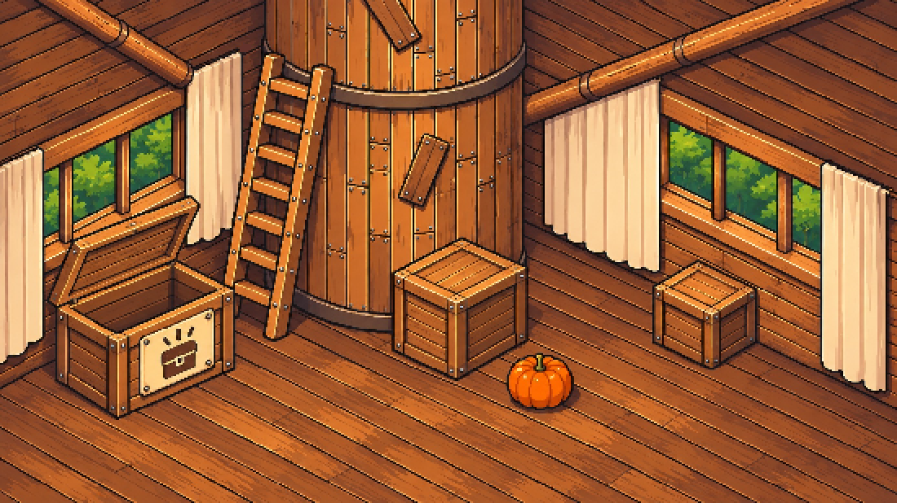
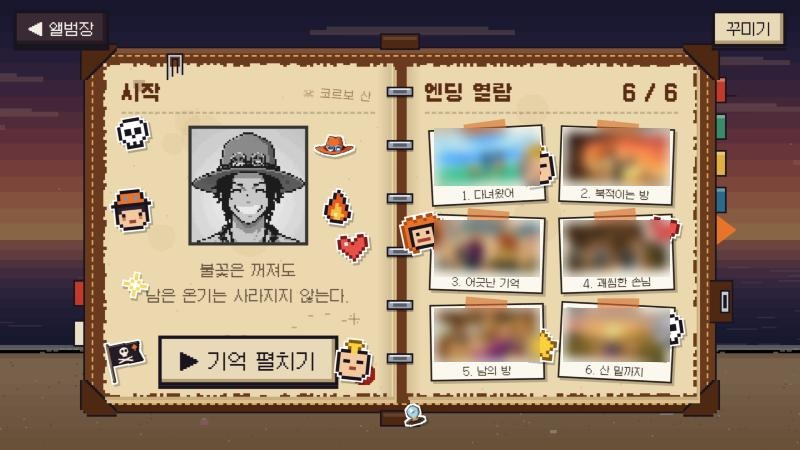
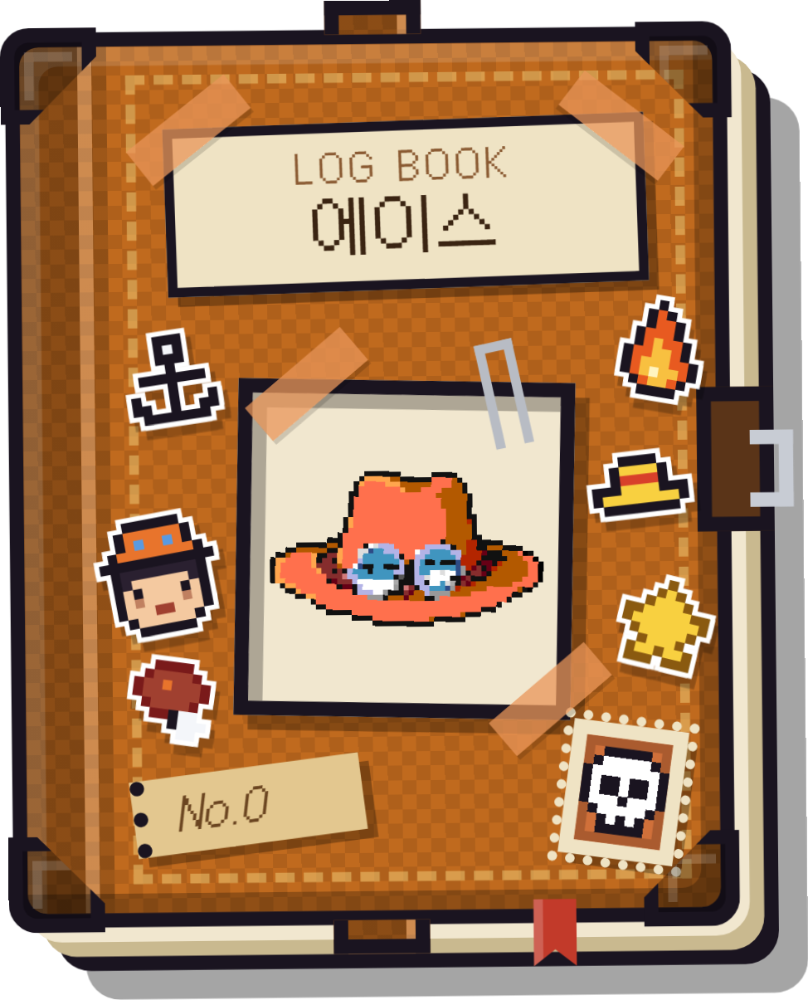
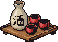
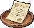
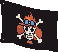
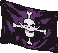
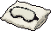
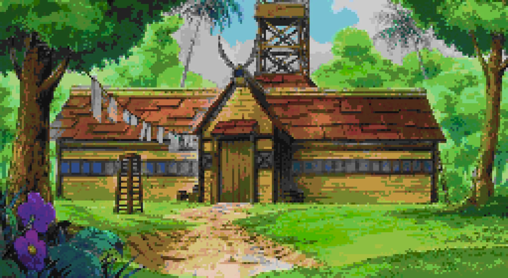

작가는 ‘그’가 쓰러지는 장면을 보여 주고, 다음 화로 넘어간다.
남겨진 이들의 슬픔과 애도는 카메라에 담기지 않는다.
몇 주 후
‘그’의 방.
주인 없는 차가운 바닥에, 나는 상자를 내려놓는다.
그의 손때가 묻은 물건을 하나씩 꺼내며
나는 그를 기억한다.
작가는 ‘그’가 쓰러지는 장면을 보여 주고, 다음 화로 넘어간다.
남겨진 이들의 슬픔과 애도는 카메라에 담기지 않는다.
‘그’의 방.
주인 없는 차가운 바닥에, 나는 상자를 내려놓는다.
그의 손때가 묻은 물건을 하나씩 꺼내며
나는 그를 기억한다.

원작에서 죽음을 맞은 캐릭터가 쓰던 방을 정리하는 도트 게임입니다. 유품을 하나씩 제자리에 놓다 보면, 그 사람이 어떻게 살았는지가 방 안에 다시 채워집니다.

원작 속 마지막 장면에서 이야기가 시작됩니다. 대사를 넘기며 그날을 따라가다 보면, 방에 들어서기 전부터 마음의 준비가 됩니다.

상자를 열고 물건을 끌어다 놓습니다. 칸은 없지만 물건마다 제자리가 있고, 그 자리는 그 사람을 알아야 보입니다.

정리를 마치면 방을 사진으로 찍습니다. 놓은 대로 엔딩이 달라지고, 본 엔딩은 로그북 앨범에 모입니다. 방을 정리한 ‘당신’이 누구인지도 이때 알게 됩니다.

에이스의 방에 놓이는 유품은 모두 원작의 장면에서 골랐습니다. 물건을 집으면 그 장면이 떠오릅니다.

어린 시절 사보, 루피와 잔을 나누며 의형제가 된 날.

주인이 있는 쪽으로 움직이는 종이. 에이스는 동생과 서로의 행방을 이렇게 이어 두었습니다.


스페이드 해적단의 선장에서 흰수염 해적단 2번대 대장으로.
밥을 먹다 잠들고, 값을 치르지 않고 떠나던 버릇.

식사 중에도 쓰러지듯 잠들던 모습.
코르보 산에서 형제들과 들고 뛰어다니던 어린 시절의 무기.


물건을 어떻게 놓았느냐에 따라 결말이 갈립니다. 어떤 엔딩이 있는지는 직접 찾아보세요.
 1
1 2
2 3
3 4
4 5
5 6
6더 자세한 이야기는 기획 의도 페이지에 있습니다.
우리는 화면 속 인물에게도 실제 친구처럼 정을 붙입니다. 심리학에서는 이를 ‘준사회적 관계’라고 부릅니다. 그래서 좋아하던 캐릭터가 떠나면 실제 이별과 비슷한 상실감을 느낍니다.
만화 《내일의 죠》에서 리키이시 토오루가 죽자 독자들은 출판사 강당에 모여 실제로 장례식을 치렀습니다. 지금도 팬들은 캐릭터의 기일을 챙기고, 추모 그림과 2차 창작을 남깁니다.
참고 · D. Horton, R. R. Wohl, 「Mass Communication and Para-Social Interaction」(1956) / J. Cohen, 「Parasocial Breakups」(2003)
작가는 대부분 죽는 순간까지만 보여 줍니다. 장례, 주인 없는 방, 남은 사람들의 일상은 다음 화로 넘어가며 생략됩니다. 독자의 슬픔은 이렇게 생략된 자리에 남습니다.
《메멘토리움》은 그 빈자리를 플레이로 채웁니다. 말로 위로하지 않고, 그 사람의 물건을 하나씩 손에 쥐어 보게 합니다.
애도는 떠난 사람을 잊는 일이 아니라 관계를 다른 모양으로 이어 가는 일입니다(지속적 유대). 그래서 이 게임의 정리는 버리는 정리가 아니라 제자리를 찾아 주는 정리입니다.
참고 · J. W. Worden, 《Grief Counseling and Grief Therapy》 / D. Klass, P. R. Silverman, S. L. Nickman 엮음, 《Continuing Bonds》(1996)
에이스 편 데모를 지금 바로 플레이할 수 있습니다.